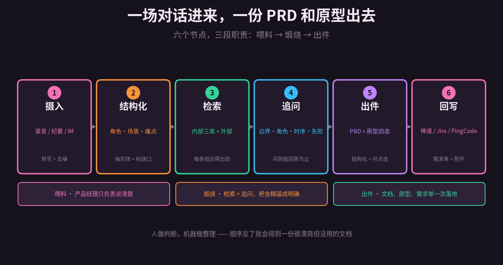
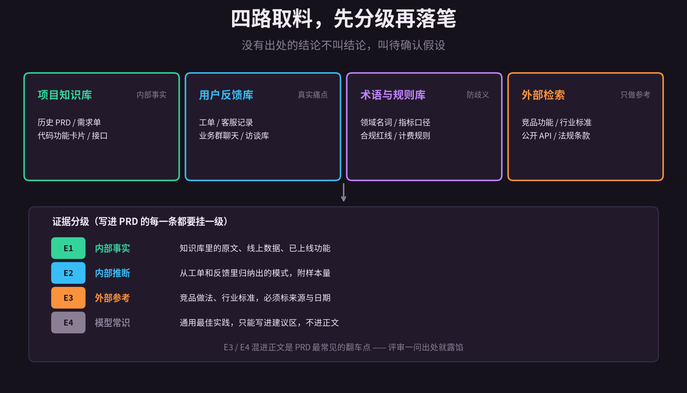
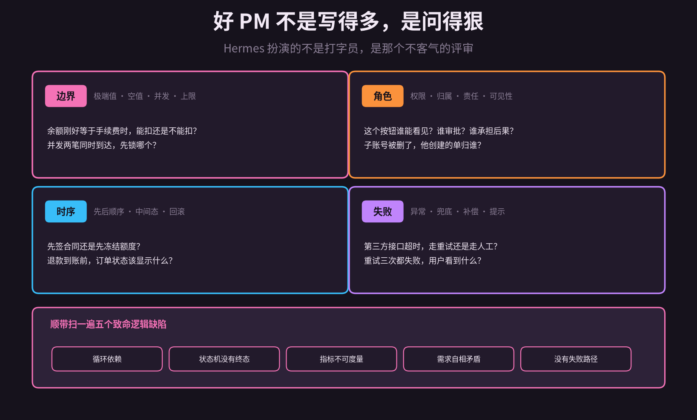
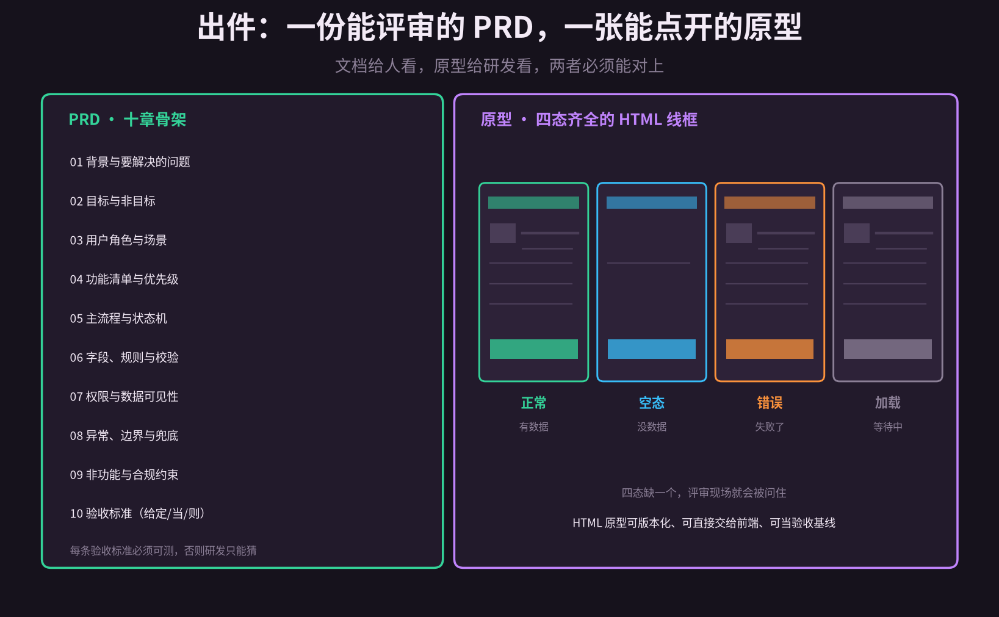
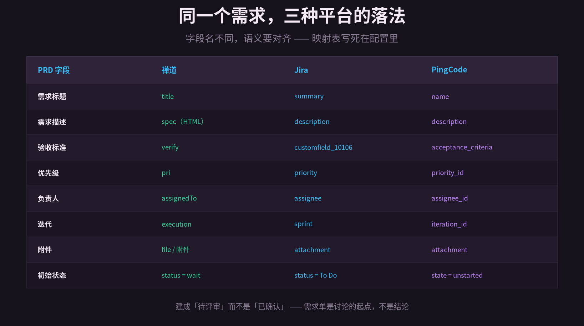

周三下午三点，跟用户聊了一个半小时。
聊的时候什么都明白。挂了电话，打开文档，光标在空白页上闪了十分钟。
他说「最好能自动一点」。这个「自动」到底是每天定时跑，还是状态一变就跑？他说「金额要对得上」。对不上时该拦住流程，还是只提示一句？
这些话当时没追问，现在只能靠猜。而猜出来的东西，评审会上一定会被问穿。
我后来发现，产品经理最耗时间的从来不是「想」，而是把想到的东西整理成一份别人能评审的东西。转写、归类、查历史、补边界、画原型、填需求单，一套流程走完，一天没了。
需求不是写出来的，是问出来的。
这篇想聊的，就是把这套整理工作交给 Hermes 之后，会发生什么。它在这条链路上不负责拍板，只负责三件事：把口语变成结构、把含糊逼成明确、把结论落成文档和原型。
1
先想清楚它该干什么
很多人上来就问，能不能让 AI 直接写一份 PRD。能，但生成出来的是模板。
PRD 里最值钱的部分不是章节，是那些「为什么这么定」。为什么是先冻额度再签合同，为什么退款要走人工，为什么这个字段不允许为空。这些判断来自对话、来自历史踩坑，不来自生成。
所以 Hermes 的角色要拆准。它做的是三段：
· 喂料 —— 把录音、纪要、聊天记录里的原始表达，变成结构化的需求原料
· 煅烧 —— 拿原料去企业知识库和外部找证据，再用四类问题把含糊的地方逼出答案
· 出件 —— PRD、原型、需求单，一次落地到平台
这和上一篇讲的「自动建单」不是一回事。那是事件驱动，状态一变就触发，人几乎不在环里。这个是对话驱动，人的参与密度高得多，每一步都需要产品经理确认或者否决。
顺序反过来就会翻车。先让机器出文档，再让人去补判断，得到的一定是一份很漂亮、但没有观点的文档。

图 1 · 六个节点，三段职责。人做判断，机器做整理
2
输入：把一场对话变成能用的原料
原料的形态比想象的杂。用户访谈的录音、会议纪要、企微群里的零散反馈、客服工单，都算。
Hermes 第一步只做两件事：转写去噪、抽取要素。转写用本地或云端的语音模型都行，关键是去噪——「嗯」「那个」「就是说」这类填充词，全删。
抽取的七个要素，缺一不可：
· 角色 谁在用，是财务、运营，还是外部商户
· 场景 什么时间、什么任务、连着哪个环节
· 触发 什么事情发生了，他才会用到这个功能
· 现状 现在怎么凑合解决的，成本是多少
· 痛点 哪一步最难受，具体难受在哪
· 期望 他嘴上说的方案，注意这只是方案，不是目的
· 约束 时间、预算、合规、现有系统的限制
这里有个死规矩：缺什么就标 missing，绝对不许补全。
模型补全的能力很强，它会给你一句读起来毫无破绽的「系统应支持灵活的权限配置」。你当时觉得挺顺，评审时被问「灵活到什么程度、谁能配、配错了怎么回滚」，就答不上来了。
所以第一步的产出不是 PRD，是一张带缺口的原料表。产品经理看着这张表补，比对着空白页写快得多。
# ~/.hermes/config/product-intake.yaml
sources:
- type: meeting # 访谈录音 / 会议纪要
- type: im # 企微 / 飞书聊天导出
- type: ticket # 工单与客服记录
extract_fields:
- role - scenario - trigger
- current - pain - expectation - constraint
treat_missing_as: missing # 缺口只标记，禁止模型补全
output: intake.json # 原料表，不是 PRD
3
检索：先找证据，再谈方案
原料表填到一半，一定会卡住。用户提的每一条，都得先问一句：我们是不是已经做过了？
有个很典型的例子。用户说「希望审批流程能撤回」，听起来是个小功能。去项目知识库里一查，两年前做过一版，上线两周就下线了——因为财务合规不允许审批人撤回已经进入付款环节的单子。
这条信息，比生成十个方案都有用。它直接把讨论从「怎么做」推到了「在哪个环节可以撤」。
Hermes 的取料分四路：
· 项目知识库 历史 PRD、需求单、代码功能卡片、接口文档
· 用户反馈库 工单、客服记录、业务群聊天、过往访谈
· 术语与规则库 领域名词、指标口径、合规红线、计费规则
· 外部检索 竞品功能、行业标准、公开 API、法规条款
检索完不能直接往 PRD 里塞。每一条结论都要挂一个证据等级，E1 到 E4。
E1 是内部事实，知识库里的原文、线上数据、已上线功能。E2 是从工单和反馈里归纳出来的模式，必须附样本量。E3 是外部参考，要标来源和日期。E4 是模型常识，只能写进建议区。
把 E3、E4 混进正文，是 PRD 最常见的翻车点。评审会上有人问一句「这是谁说的」，你就得当场解释半天。
检索还有一个副产品：冲突检测。用户说的和两年前的决策冲突、和现行合规规则冲突、和他自己上一次访谈说的冲突，这三种都要单独列出来。
冲突不是要你去说服用户，是提醒你这次访谈里有一个没聊透的地方。

图 2 · 四路取料，先分级再落笔
4
追问：让 Hermes 当那个不客气的评审
这是整条链路里最值钱的一段，也是最容易被做废的一段。
做废的方式很统一：让 AI 列一百个问题。产品经理看一眼，关掉。因为问题不可回答，或者看不出为什么要问。
有效的问题只有四类，而且每条都要附一句「为什么问」。
边界
账上余额刚好等于手续费时，能扣还是不能扣？两笔分账同时到达，先锁哪个账户？
为什么问：这类问题不定义，开发就会各自实现一套，联调时才发现两个系统的边界行为相反。
角色
这个按钮谁能看见？谁审批？谁承担后果？负责人生成单的人离职了，他建的单归谁？
为什么问：权限和归属是需求里最容易漏的一层，漏了不会报错，只会在上线后变成扯皮。
时序
先签合同还是先冻结额度？退款到账之前，订单状态该显示什么？
为什么问：中间态是状态机设计里最难的，不画出来，实现的时候一定会有两种理解。
失败
第三方接口超时，走重试还是走人工？重试三次都失败，用户看到什么？
为什么问：没有失败路径的需求是不完整的需求，只写顺利路径的 PRD 一定会在灰度时被补丁追着改。
除了问，还要扫逻辑缺陷。五类最常见：循环依赖、状态机没有终态、指标不可度量、需求自相矛盾、没有失败路径。
比如「订单完成后自动关闭工单，工单关闭后触发订单完成」，这就是循环依赖。听起来很顺，跑起来就是死循环。
至于头脑风暴，我建议别用「给我十个点子」这种问法。有效的做法是受约束的发散：给定现有技术栈、三个月工期、两个人，列出三种方案，每种附上代价，再明确说这一版不做什么。
约束越硬，方案越能用。没有约束的发散，产出的是创意，不是设计。

图 3 · 四类追问 + 五类逻辑缺陷。问题必须可回答
5
出件一：一份能评审的 PRD
前面三段聊完，PRD 基本就是「把已经确认的东西按顺序写下来」，这一步反而是最机械的。
骨架十章，顺序别乱。背景、目标与非目标、角色与场景、功能清单、主流程与状态机、字段规则、权限、异常边界、非功能与合规、验收标准。
其中「非目标」这一章最容易被跳过，也最重要。明确不做什么，比列一堆要做的更能防范围蔓延。评审时有人提新想法，你就可以指回这一章。
验收标准单独说。每一条都必须可测，写成「给定 / 当 / 则」三段。
反例：系统应保证分账金额准确。
这句话没有信息。什么叫准确，谁来判，误差多少算不准确，全不知道。开发看到只会问一句「所以呢」。
正例：给定订单 100 元、两个子商户各分 30%，当分账执行成功，则两个子商户余额分别增加 30 元，平台留存 40 元，且三者之和等于 100 元。
这样的句子，测试可以直接照着写成用例，开发也没法含糊。Hermes 生成完会做一遍自检，凡是出现「合理」「尽量」「适当」这类词，全标红让人改。

图 4 · 左：PRD 十章骨架；右：原型四态。两者必须能对上
6
出件二：原型图，别指望一步到位
先说结论：一句话生成高保真原型，目前不靠谱。生成出来的东西乍看精致，细看每个按钮都没有含义。
原型该分三层做，Hermes 只做前两层。
· 低保真 结构线框，只表达信息层级和页面之间的关系
· 中保真 带上真实文案、字段、按钮，以及空态、错误态、加载态
· 高保真 视觉、动效、品牌规范，交给设计师
为什么用 HTML 而不是 Figma 文件？三个理由。可版本化，每次改动能 diff；可直接交给前端，不是一张图；可当验收基线，跑起来就是最终形态。
Hermes 从 PRD 的页面清单出发，一个页面一个 HTML 文件，文件头写着对应的 PRD 章节号。评审时看到哪个页面不对，直接说第几章第几页，不会出现「我说的那个弹窗」这种对话。
四态是硬要求。正常态、空态、错误态、加载态，缺一个，评审现场一定被问住。空态尤其重要，它逼你说清楚「没有数据时用户该干什么」。
最后记住一句：原型是讨论工具，不是交付物。它的价值不在好看，在于让「我以为你懂了」这件事当场暴露。
7
回写：落到禅道、Jira、PingCode
文档和原型都在本地了，最后一步是让它们进入团队真正会看的地方。
三个平台的字段名完全不同，语义要提前对齐。禅道的需求叫 story，描述字段是 spec，还吃 HTML；Jira 叫 Story，描述是 description，验收标准常常要挂一个自定义字段；PingCode 叫 requirement，状态枚举又是另一套。
这张映射表不能靠记忆，写进配置里，改一次全链路生效。
附件怎么带？PRD 转成 Markdown 和 PDF 各传一份，原型打包成 zip，再补三张关键页面截图。截图是给不看附件的人准备的，别省。
层级也要想清楚。一个大需求底下会拆出若干子需求，子需求再挂任务。别把十章 PRD 全塞进一张单子里，没人看得完。
幂等用一个指纹兜底，标题加核心场景做哈希。同一个需求重复触发，不会建出三张一样的单子。
初始状态设成「待评审」，不是「已确认」。这一步是态度问题，需求单是讨论的起点，不是结论。

图 5 · 字段名不同，语义要对齐
8
配置与边界
整条链路拆成三个 Agent，各自有明确的输入输出。
· intake 吃原始素材，产出原料表加缺口清单
· critic 吃原料表，做检索、追问、缺陷扫描，产出确认过的需求条目
· author 吃确认条目，出 PRD、出原型、写回平台
拆开的好处是每一步都能单独重跑。追问那一轮答得不满意，只重跑 critic，不用从头再来。
# ~/.hermes/config/prd-pipeline.yaml
critic:
rounds: 3
dimensions: [boundary, role, sequence, failure]
flaws: [circular_dep, no_terminal_state,
unmeasurable_kpi, contradiction]
ask_why: true # 每个问题附「为什么问」
author:
prd_template: ten_chapters
prototype: html # 线框 + 四态
write_back:
status_on_create: pending_review
dedup_key: sha1(title + core_scenario)
attach: [prd.md, prd.pdf, prototype.zip]
上线别一步到位，分三步走。
第一步只读。只摄入、只检索，产出原料表和证据清单，不写任何文档。
第二步出文档，人工确认后才允许回写平台。
第三步才是全自动建需求单，而且只对熟悉的业务域开放。
五条边界，写在这里省得以后再踩。
不懂业务常识。模型能把话说圆，但不知道这个行业里哪些操作是要被合规审查的。这类判断只能人补。
原型不能替代设计。它解决的是结构和状态，解决不了视觉和体验。
PRD 是承诺，不是文档。写进去的每一条，后面都要有人为它负责。
别让它替你拍板。它可以给三个方案和代价，不能选那个方案。
外部检索必须标来源。没有来源的外部信息，当成没查到。
说到底，这套东西改变的不是产品经理的工作量，是工作的分布。
整理、归类、查历史、填字段，这些曾经占掉大半天的活，被压到了几十分钟。省下来的时间，应该花在访谈里多问一句「那如果余额不够呢」，花在评审前多想一遍「这个方案失败时会怎样」。
机器把整理成本降到接近零之后，判断就成了唯一稀缺的东西。
而判断，从来不是写出来的。